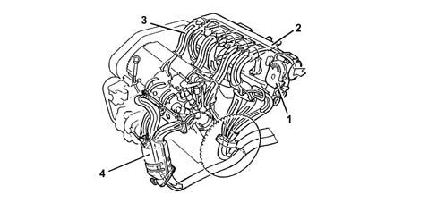

INTRODUCTION - INTAKE AND EXHAUST MANIFOLDS
- Path
- Descriptions > 10 ENGINE UNIT > 1072 INLET AND EXHAUST MANIFOLDS > INTRODUCTION - INTAKE AND EXHAUST MANIFOLDS
- Kind
- system description
- Applies to
- engines: 2.0 JTS, 3.2 V6, 1.9 JTD 16V; all production periods
- Interactive page
- https://sloeber94.github.io/elrnDB-aGt/en/#/125000293
Applies to: engines: 3.2 V6; all production periods
CONSTRUCTION SPECIFICATIONS
SYSTEM

1 - Motorized throttle body
2 - Air chamber
3 - Intake ducts
4 - Exhaust manifolds with built-in catalytic preconverters